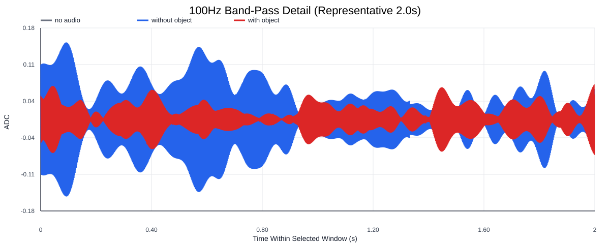
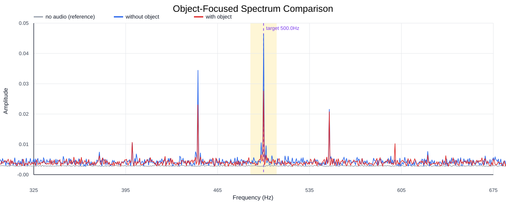
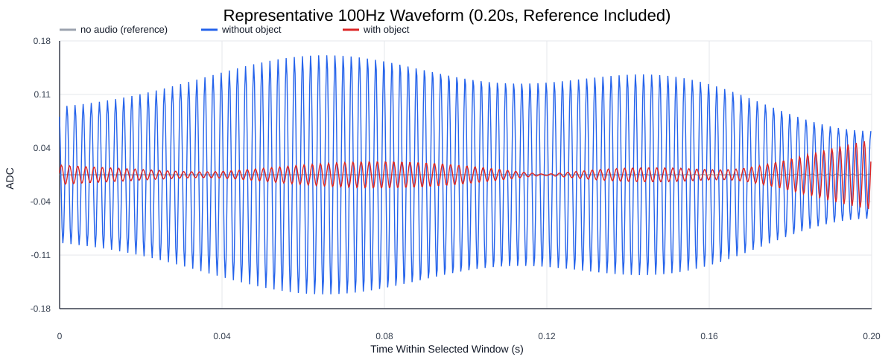
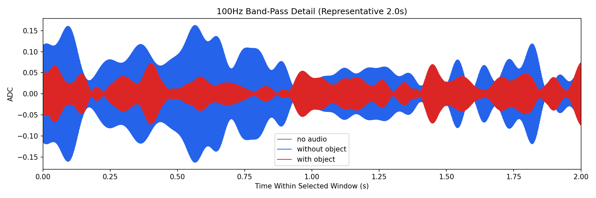
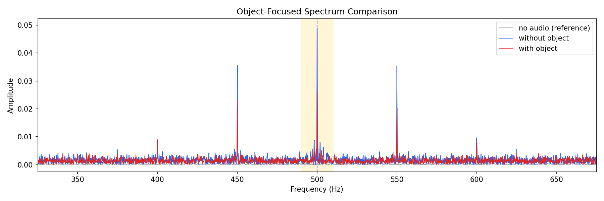
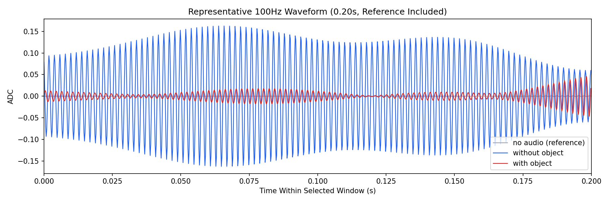

Background: F:\项目类文件夹\异物检测4.10\Data_Dual\frequency_sweep\0500Hz\repeat_05\raw\no_audio.csv
Without object: F:\项目类文件夹\异物检测4.10\Data_Dual\frequency_sweep\0500Hz\repeat_05\raw\without_object.csv
With object: F:\项目类文件夹\异物检测4.10\Data_Dual\frequency_sweep\0500Hz\repeat_05\raw\with_object.csv
| Metric | 无音频 | 100Hz无异物 | 100Hz有异物 | 无异物/无音频 | 有异物/无异物 | 有异物/无音频 |
|---|---|---|---|---|---|---|
| centered_rms | 0.020873 | 0.200300 | 0.146733 | 9.5963 | 0.7326 | 7.0299 |
| raw_target_amp | 0.000436 | 0.048399 | 0.027873 | 111.0900 | 0.5759 | 63.9762 |
| filtered_rms | 0.002121 | 0.058566 | 0.027438 | 27.6120 | 0.4685 | 12.9360 |
| filtered_target_amp | 0.000436 | 0.048399 | 0.027873 | 111.0900 | 0.5759 | 63.9762 |
| filtered_energy_ratio | 0.010326 | 0.085492 | 0.034965 | 8.2792 | 0.4090 | 3.3861 |
| window_filtered_target_amp_mean | 0.001121 | 0.073602 | 0.033639 | 65.6799 | 0.4570 | 30.0186 |
| window_filtered_target_amp_std | 0.002342 | 0.036446 | 0.017126 | 15.5625 | 0.4699 | 7.3128 |





